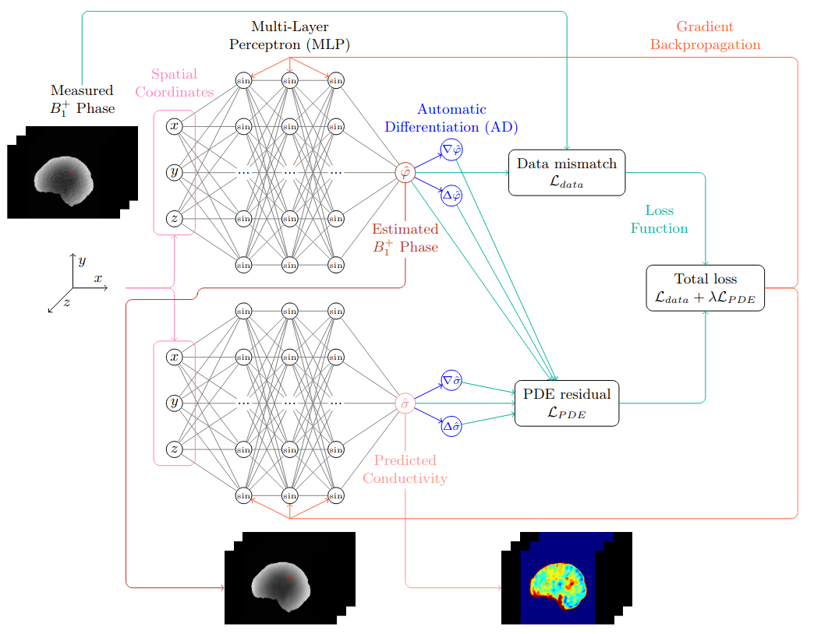
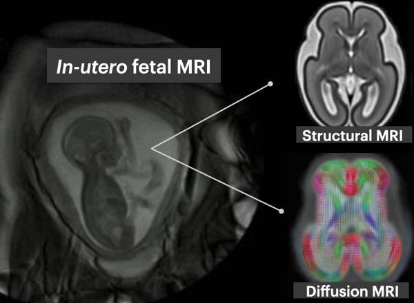
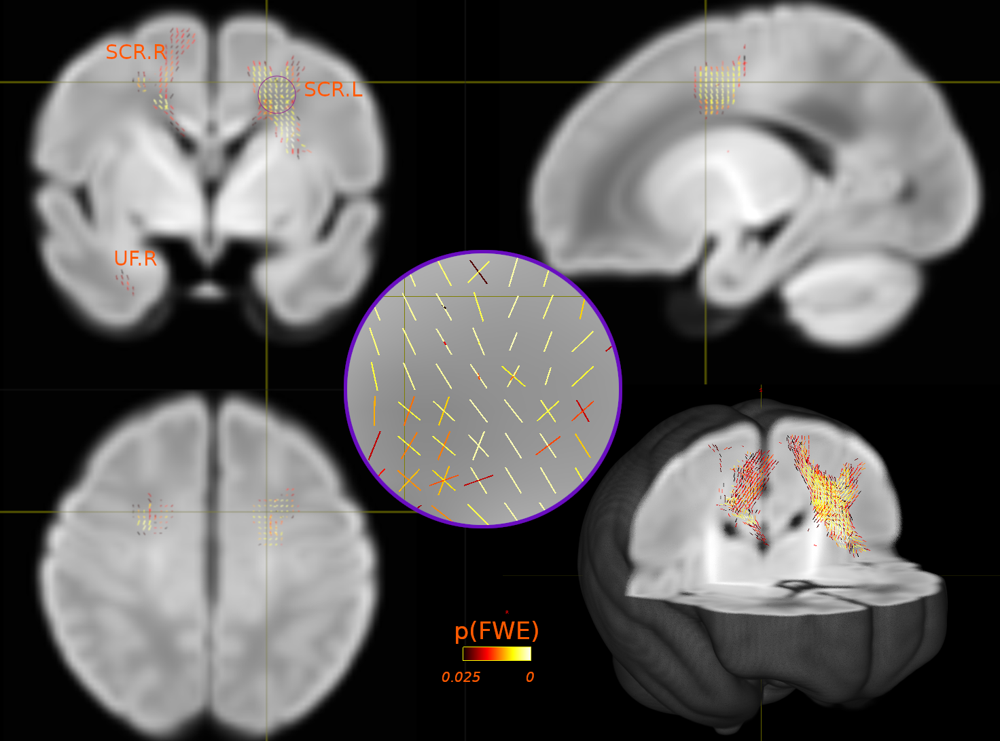
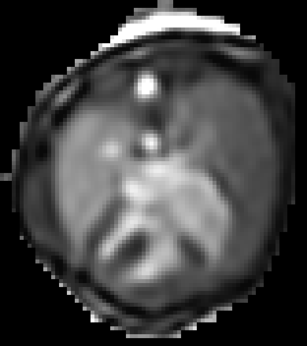
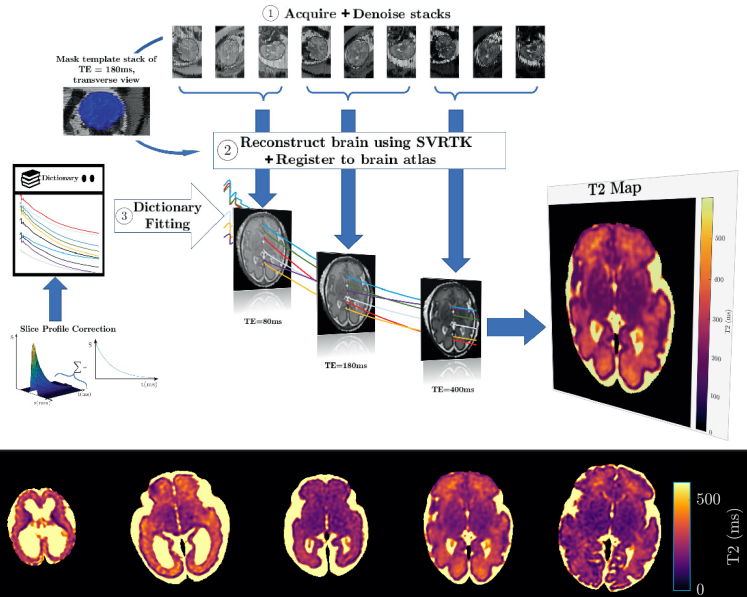
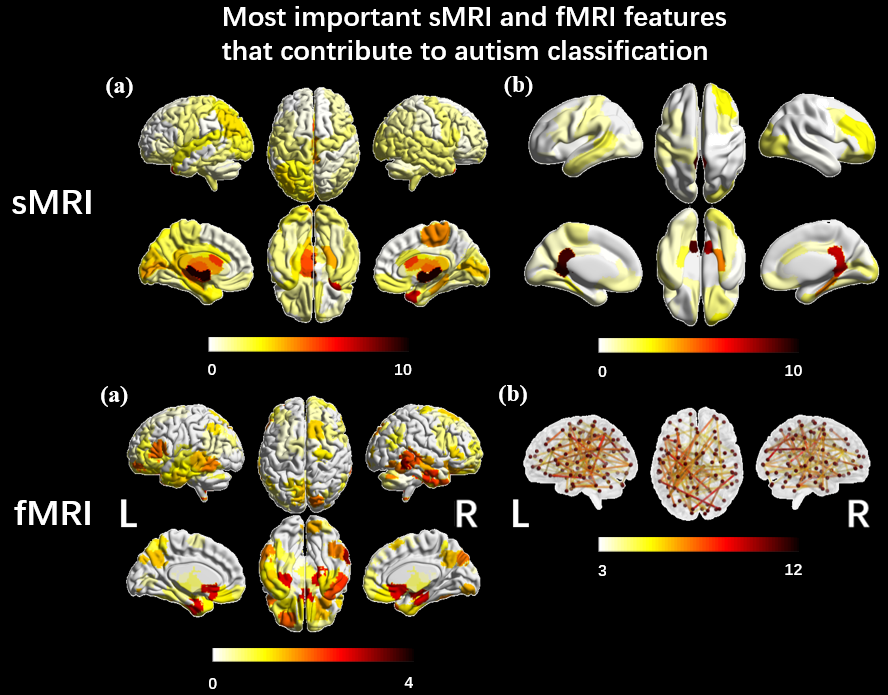
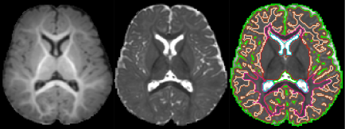
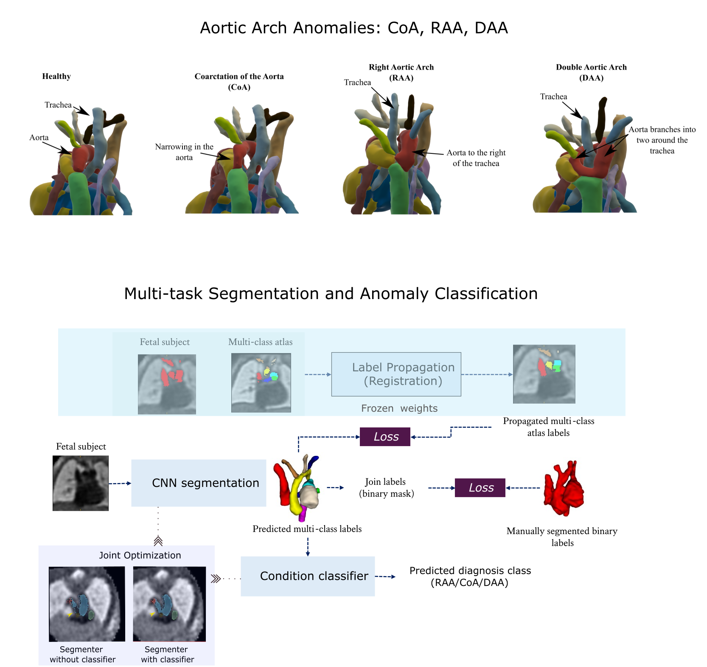

Electrical properties tomography using physics-informed neural networks for brain conductivity reconstruction
Electrical properties tomography (EPT) is an imaging technique that non-invasively determines the spatial distribution of electrical conductivity and permittivity using magnetic resonance imaging (MRI). The obtained electrical properties (EPs) have the potential to be used as biomarkers in several applications, as they relate to tissue water content and ion concentration. EPs are typically estimated by solving an inverse problem involving a partial differential equation (PDE). However, current numerical approaches based on finite difference schemes are sensitive to spatial fluctuations caused by noise or image artefacts. In this project, we propose instead to employ physics-informed neural networks (PINNs) to solve the EPT inverse problem. Our method learns a continuous representation of the conductivity that is more robust to noise, and we explore physics-based regularisation to further improve accuracy on patient data.

Exploring early fetal brain development: a deep learning approach
This project aims to develop and apply deep learning image analysis tools to enable understanding of early brain development as depicted by multi-modal MRI (structural and diffusion). This includes developing methods to segment transient and emerging brain structures and characterise their microstructure in healthy fetal brain development.

Exploring Genetic Links: Neuroimaging Insights into Autism and Schizophrenia
This project focuses on exploring connections between neuroimaging indicators associated with genetic factors linked to both schizophrenia and autism. Our findings contribute to the growing body of evidence suggesting that common genetic variations associated with autism could potentially influence structural brain changes from an early stage of development.

Fetal whole-heart 4D reconstruction using motion-corrected Doppler ultrasound-gated imaging
Retrospective image-based gating combined with 2D-3D motion-corrected slice-to-volume registration (SVR) have been previously described for fetal whole-heart dynamic reconstruction, but these methods are time-consuming, sensitive to image quality and may not fully capture normal fetal heart rate variation during acquisition. This project therefore aims to overcome these challenges by developing a 3D+time reconstruction pipeline incorporating Doppler ultrasound (DUS) gating, traditional SVR motion correction techniques, and machine/deep learning image analysis tools. This work could provide a highly reliable tool for visualising the fetal cardiac anatomy and function.

Quantitative Fetal measurements in MRI
Fetal tissue development is observed through the changes in structures and contrast observed in MRI images. This suggests that the magnetisation properties of the tissue changes with fetal development. The use of quantitative MRI gives the ability to provide a quantitative understanding of these properties of fetal tissue with the use of MR techniques. To obtain quantitative images from MRI, motion correction challenges when obtaining the images will have to be addressed. Traditional qMRI methods are highly susceptible to motion corruption and, therefore, state of the art fetal imaging techniques will be investigated to generate the motion corrected quantitative maps of fetal organs. The overall outcome is to develop motion-resistant slice-selective MRI sequences from which quantitative maps can be derived through reconstruction of these sequences.

Reproducible comparison and interpretation of machine learning classifiers to predict autism on the ABIDE multimodal dataset
Five machine-learning models were trained to classify autism using ABIDE. Similar performance suggested accuracy variations in literature may stem from inclusion criteria, modalities and evaluation pipelines. SmoothGrad investigated the stability of features identified by models and showed structural and functional features from ventricles and temporal cortex contribute to autism identification. The results suggested that structural features from the ventricles and functional features from the temporal cortex made the most significant contributions to the algorithms identifying autistic participants.

Segmentation of 6 months old babies
In this project, we introduced the first domain adaptation-based automatic 9-tissue segmentation pipeline for 6-month-old brains. Utilizing domain adaptation techniques, we achieved image contrast transformation between neonatal and 6-month infant images. The segmentation model was trained using synthesized 6-month-old brains, which were generated from neonatal brains combined with neonatal anatomical information.

3D Fetal MRI cardiac vessel segmentation and diagnosis classification using multi-task learning
Congenital Heart Disease (CHD) is a group of cardiac malformations present already during fetal life, representing the prevailing category of birth defects globally. Using atlases for three types of aortic arch anomalies, this project aims to aid 3D vessel topology visualisation in T2w fetal cardiac MRI. The proposed strategy employs a multi-task framework for anomaly classification and multi-class vessel segmentation from propagated atlas labels. Two jointly optimised networks are employed for each task, improving segmentation topology performance.
